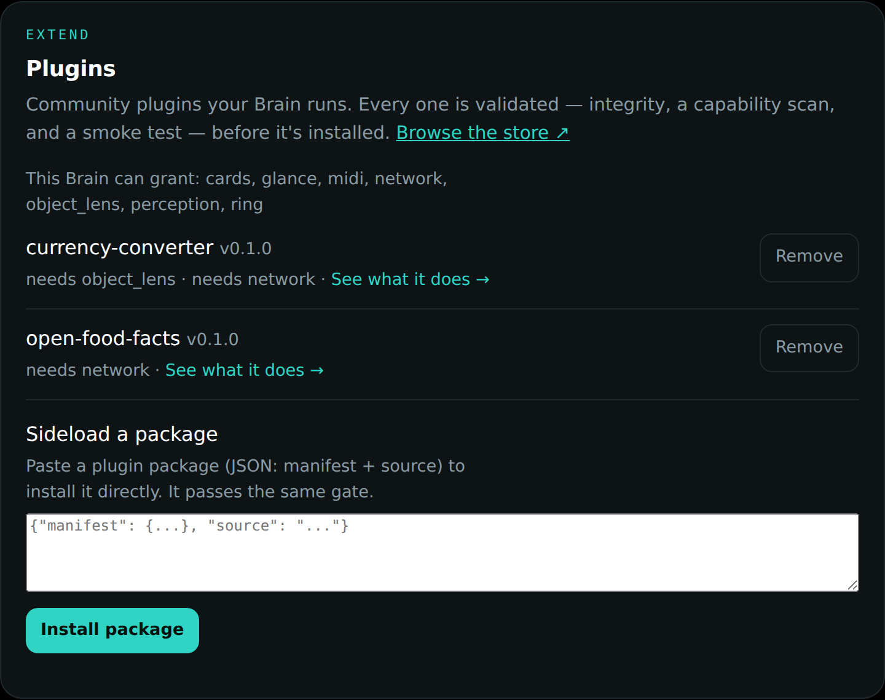
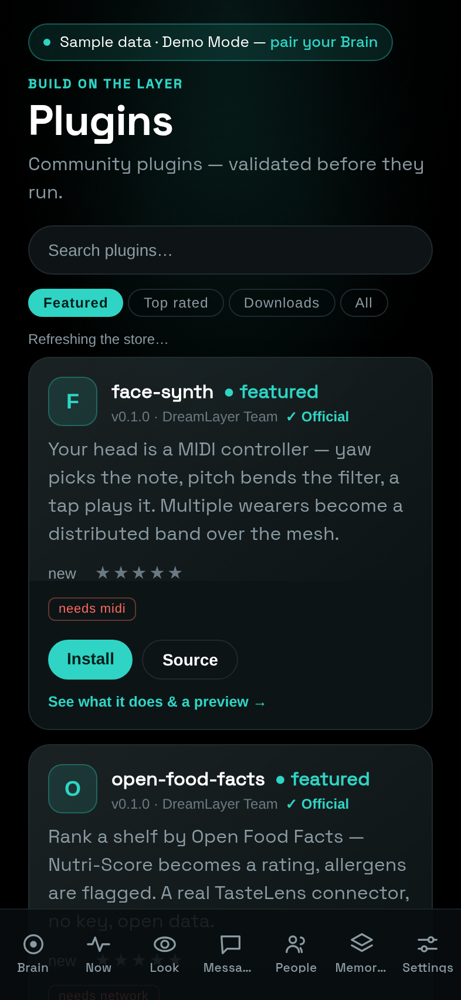

The platform — plugins, the mesh, and the store
DreamLayer is becoming a platform: a supported way for anyone to extend the
glasses without forking the product. The plan is five pillars
(docs/PLATFORM.md), built in dependency order, and all five have landed
their first working layer. The through-line: the codebase already ran on
declarative registries (object-lens providers, glance candidates, brain
tiers) — the platform work formalizes those seams instead of inventing new
ones.
Pillar 1 — real perception at Tier 0
ai_brain/perception.py gives the glasses' own silicon a first-class seat.
A Perceptor protocol (mirroring VisionBrain) emits typed
PerceptSignals — face present, text density, form fields, a question, an
object, a language guess — and a PerceptionRouter holds perceptors in
preference order, exactly like the brain router:
HeuristicPerceptorships today: zero-model coarse cues (text density from gradient statistics, object-ness from contrast) that feed the Glance Arbiter's cheap first pass.NpuPerceptoris the seam:vision_fn/audio_fnare where a Vela-compiled model for the Halo's Ethos-U55 NPU (about 46 GOPS int8) plugs in. It returnsNoneuntil a model is wired, and the router falls back to the heuristic — so the arbiter gets model-grade signals the day hardware arrives, with no change to its logic.
Pillar 2 — GhostMode mesh and The Beacon
Confluence's two-wearer bond, lifted to a group (confluence/mesh.py):
form a circle with a three-word code, and up to a whole crew shares one
ambient layer for a night (groups expire after 8 hours; a quiet member
fades from the circle in 12 seconds).
The privacy properties are structural: only feeling crosses the wire — a weather scalar, a bearing, a gesture symbol — never speech, never coordinates, never names (members are anonymous ids; names live only in your local alias map). Packets are HMAC-signed with a key derived from the group code; forged, replayed, stranger, and stale-group traffic drops silently; the Veil silences your side of the mesh like everything else.
The Beacon is the first thing built on it: "find my group" as a feel, not a map. Each member broadcasts a coarse bearing and a distance band (close / near / far — never coordinates); your rim renders one pulse per fresh member, nearer means brighter and faster, and a BeaconCard names them from your local aliases ("Maya - close, ahead-left"). Seam: the LE Coded PHY radio transport; an in-memory bus stands in for it in tests and demos (15 tests cover the crypto, the drops, and the veil).
Pillar 3 — the Plugin API
plugins/base.py is the supported extension surface — now formally
versioned and shipped as the SDK (dreamlayer.sdk, typed, with
its own CLI). A plugin is a name, a version, a list of required
capabilities, and one register(ctx) call. The registration hooks:
| Hook | What it extends |
|---|---|
add_object_provider |
a panel when you look at a matching object |
add_glance_candidate |
a lens the look can route to |
add_vision_brain / add_knowledge_brain |
a new brain tier |
add_perceptor |
a Tier-0 perception tier |
add_card_renderer |
how a custom card draws |
add_shop_provider |
a TasteLens data connector |
API v2 plugins can additionally live (start/stop/tick lifecycle),
listen (a veil-gated event bus — while the Veil is down, only the veil
event is delivered), and remember (per-plugin persisted settings) — the
detail is in the SDK chapter.
Capabilities are the permission system: a plugin declares what it needs
(network, midi, mesh, cards, perception, the cloud_*
entitlements...) and the host grants only what it can and will — fs is
withheld by default, subprocess and ctypes map to a capability that
cannot be declared at all (forbidden outright, not merely withheld),
network is revoked while the Veil is down, and a plugin requiring a
capability the device cannot grant is refused at install. A throwing
plugin is isolated; the registry records loaded / skipped / failed — and
untrusted plugins now run down an isolation ladder
(subprocess jail, OS sandbox where available, a WASM tier behind an
operator flag), watched by a capability-transparency log.
There is also a plan seam on top: a paid plan can grant extra
capabilities beyond the free set, though today the free plan grants
everything — the honest state of that seam is in
DreamLayer Cloud.
Want to write one? dreamlayer plugins new scaffolds an API v2 plugin in
one command (the SDK); the ten-minute tutorial plugin,
examples/hello-lens/, is CI-tested and walked through in
Open source. Want to build one without code? That is
the Lens Builder.
Pillar 4 — TasteLens
The first-party lens built on the plugin seams, proving them: the ranking
engine is core, but its data connectors are ordinary plugins through
add_shop_provider. Full chapter: Scholar and TasteLens.
Pillar 5 — the WebBLE playground
Drive the actual glasses from a browser tab — no app store, no install.
web/playground.html (also live on the site at
dreamlayer.app/playground) speaks
Lua over the Nordic UART BLE service, the same transport the phone hub
uses: connect, run canned HUD demos, or type Lua into a live REPL. Works in
Chrome and Edge on desktop and Android; it detects browsers without Web
Bluetooth (every iOS browser, Firefox) and says so honestly instead of
showing a dead button.
The first plugin shipped with it: Face Synth — head yaw picks the note
(quantized to a scale, so there are no wrong notes), pitch bends
expression, a tap plays, and several wearers become a band over the mesh,
one MIDI channel each. Seam: the MIDI bridge (midi_out); the plugin
stays dormant until one exists.
The marketplace
A plugin ships as a package: a manifest (name, semver, entry point, required capabilities, sha256 checksum of the source, author copy and screenshot kept outside the checksum so copy edits do not re-sign code) plus one Python file. Every install — store or sideload — passes the validation gate, now five defences:
- Manifest shape (name/version/entry/api rules, only known capabilities)
plus an SDK-compatibility check: a plugin declaring
min_sdknewer than the host is refused by name. - Integrity — the checksum must match, twice (registry-advertised and fetched).
- Authenticity — a manifest-bound Ed25519 signature when present (a bad signature is a hard error; unsigned installs under curated-registry trust with a warning).
- A static AST scan —
subprocess, sockets,ctypes, file deletion,eval/exec/pickleare flagged; each allowed only if the matching capability was declared, some forbidden outright. - A smoke load against a mock context granting only declared capabilities — opt-in author tooling only since the secure-defaults pass: validating a package on the install path never executes its code.
The honest limit, stated in docs/MARKETPLACE.md: in-process Python cannot
be perfectly sandboxed — the gate is defense-in-depth for a curated,
reviewed registry, with signatures and real isolation as the hardening
path.
The store, in three places
- The website — dreamlayer.app/plugins: browse, search, Featured / Top rated / Most downloaded tabs, per-plugin detail with the author's screenshot, plain-English permissions, star rating, and a copy-install action. Search is one ranked, typo-tolerant scorer (fielded weights, a curated concept map, one-edit tolerance) shared verbatim by the store page, the phone, and the Worker's search route — the same query ranks the same everywhere.
- The phone — the Plugins screen (Settings, "Build on the layer"): same catalog, install/remove, one-tap rating, and a permissions alert before any install ("This plugin will be able to use: ..."). Installs work in production now: the store's catalog is bundled with the deployed site, the phone fetches the package and sideloads it to the paired Brain, and the Brain's real validation verdict is what the user sees. The phone never runs plugin code; with no Brain paired, the install queues locally and is delivered the moment one pairs.
- The Mac panel — the Plugins card: what is installed, what this Brain can grant, per-plugin remove, and a sideload box that passes the same gate:

A real session demonstrating the gate: two registry plugins installed; a
third (hud-reactions) refused because that machine could not grant the
mesh capability it requires. Since then the Brain has learned to grant
mesh and shop (pinned by test_plugin_install_real.py), so today
every plugin in the registry — hud-reactions included — installs; the
refusal path still fires for a capability the host genuinely lacks.

The social layer — live at api.dreamlayer.app
Ratings, downloads, and comments live in a deliberately separate service:
a Cloudflare Worker at api.dreamlayer.app
(registry-api/, KV-backed; the bare root redirects to the store). The
contract began as five routes — list stats, per-plugin stats and comments,
rate, comment, record a download — and has since grown the waitlist and
the community layer (figment gallery submissions, verified
Figment Golf, Lens Jams), all rate-limited per IP and hardened against
stored-XSS and index pollution. The split is a security decision — the API
serves only numbers, never plugin code. The catalog itself is git-backed
and validated (registry/), and clients merge the two by name, falling
back to their bundled snapshot when the API is unreachable. Compromising
the social service cannot ship code to anyone.
The registry today
Six plugins, every one passing the gate in CI (registry/packages/) —
all now API v2, all carrying the "Official — DreamLayer team" badge
(the store renders it), all free (the paid-store UX exists behind a
payments flag that is off; see the community layer):
| Plugin | What it does | Needs |
|---|---|---|
open-food-facts |
TasteLens connector — Nutri-Score to rating, allergens flagged | network |
currency-converter |
look at a foreign price tag, see your money, live rates | object_lens, network |
hud-reactions |
throw a reaction onto your HUD, shared to your GhostMode circle | cards, mesh |
filler-word-counter |
a perceptor that tallies "um / uh / like" as you speak | perception, cards |
face-synth |
your head as a MIDI instrument; wearers form a band over the mesh | midi |
air-drums |
gesture-zone drum kit on MIDI channel 10 | midi |
Hardening in the record
One more platform property worth naming: a performance can never crash the Brain. The Reality Compiler's rehearsal endpoint wraps inference in a last-resort net — any pathological beat combination returns an honest "CAN'T DO THAT" teach card instead of a 500 — and the choreographer was fixed so repeated counting beats feed one counter. The store, the gate, and the rehearsal surface are all built on the same assumption: outside input is hostile until proven otherwise.